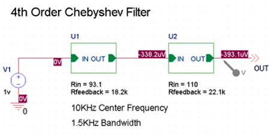
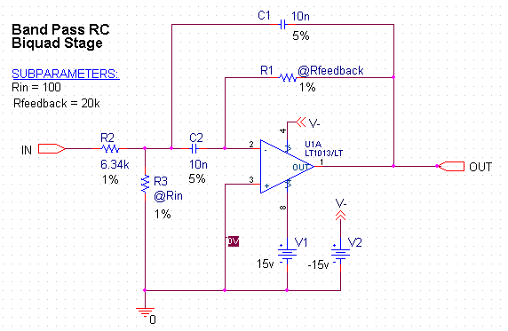

You can pass parameters from the top-level schematic to a
subcircuit schematic using the SUBPARAM part. This allows
you to explicitly define the properties and default values
to be used during netlisting and simulation.
Any part in the subcircuit (child) schematic can reference
the properties in its PSPICETEMPLATE. The PSpice subcircuit
mechanism supports parameterizing:
- constants specified on device statements
- model parameters
- expressions consisting of constants
- parameters
- functions
To set up parameter passing to a subcircuit using SUBPARAM
- Make the subcircuit your active schematic page in the Capture schematic page editor.
- From the Place menu, choose the Part command.
- Select the part SUBPARAM from the PSpice library SPECIAL.OLB and place it on the subcircuit.
-
With the SUBPARAM part still selected, from the
Edit menu, choose Properties.
The property editor appears.
In the spreadsheet, on an instance-by-instance basis, define the names and default values for the properties that can be changed. - To view property names and values at the same time, select a property cell, and click the Display button.
- The displays.
-
Check Name and Value format for Display Format, then
click OK.
In the top-level schematic, use the property editor to edit the properties of the hierarchical part or block that references the subcircuit (child) schematic so they match the properties you defined in Step 5.
Example
This fourth-order Chebyshev filter schematic illustrates
how the SUPARAM part may be used to pass design parameters
from a top-level (parent) schematic to a subcircuit (child)
schematic in a hierarchical design.
In the top-level schematic, you explicitly define the
parameter values you want to pass to a subcircuit. In this
case, the parameters and their corresponding values for the
U2 subcircuit are Rin = 110 and Rfeedback = 22.1k.

Descending into the hierarchy of the U2 subcircuit, you see the Rin and Rfeedback parameters listed with their corresponding default values of 100 and 20k, respectively, in the SUBPARAM part (under SUBPARAMETERS).

Notice the Rin and Rfeedback values are preceded with @
symbols, indicating that these parameters are substituted
with values passed down from the top-level schematic.
Here is the hierarchical netlist generated in Capture for
this design:
* source HISTO
V_V1 N00023 0 AC 1v
X_U1 N00023 N00030 OneStage PARAMS: RIN=93.1 RFEEDBACK=18.2k
X_U2 N00030 OUT OneStage PARAMS: RIN=110 RFEEDBACK=22.1k
.SUBCKT OneStage IN OUT PARAMS: RIN=100 RFEEDBACK=20k
V_V2 V- 0 -15v
R_R2 IN N00024 R_R2 6.34k
.model R_R2 RES R=1 DEV=1%
R_R1 N00034 OUT R_R1 {Rfeedback}
.model R_R1 RES R=1 DEV=1%
R_R3 0 N00024 R_R3 {Rin}
.model R_R3 RES R=1 DEV=1%
C_C1 N00024 OUT C_C1 10n
.model C_C1 CAP C=1 DEV=5%
C_C2 N00024 N00034 C_C2 10n
.model C_C2 CAP C=1 DEV=5%
X_U1A 0 N00034 N00594 V- OUT LT1013/LT
V_V1 N00594 0 15v
.ENDS
Here, the U2 and U1 subcircuits are referenced in the source (top-level) circuit as X_U1 and X_U2 with the explicit values defined for the parameters that are passed to from the top-level. A .SUBCKT models both the U1 and U2 subcircuits and the default parameters are listed as placeholders. When PSpice simulates the design, the parameters passed from the top-level circuit are the ones used in the subcircuits.